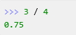
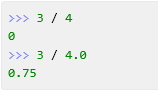

chapter00. Python2.7 vs Python3.x
본 장에서는 파이썬 2.x 버젼과 3.x 버젼의 차이점에 대해 설명할 것입니다.
(1)print
-파이썬 3.x
#예제0.1
print ("Hello Python")
-파이썬 2.7
#예제0.2
print "Hello Python"
-> 파이썬 2.7 버젼인 경우에는 괄호를 사용해도 동일한 결과를 얻을 수 있다.
(2)자동 형 변환
파이썬3.x의 경우 숫자연산 시 자동으로 형 변환이 된다.
-파이썬 3.x

-파이썬 2.7

(3)input
파이썬 3.x 버젼의 input내장함수와 파이썬 2.7버젼의 raw_input내장함수는 동일하다.
기존 파이썬2.7.의 input 내장함수는 파이썬 3부터는 더이상 지원되지 않는다.
-파이썬 3.x
#예제0.3
name = input("이름을 입력하세요:")
-파이썬 2.7
#예제0.4
name = raw_input("이름을 입력하세요:")
(4)소스코드 인코딩
파이썬 3버젼 부터는 utf-8이 기본 소스 인코딩이므로
다음과 같은 문자열을 소스코드 첫줄에서 생략할 수 있다.
# -*- coding: utf-8 -*-
(5)에러처리
try ... except... 에러 처리 시 에러 변수명을 표기하는 방식이
파이썬 버젼 3.x와 2.7이 서로 다르다.
-파이썬 3.x
#예제0.5
try:
4 / 0
except ZeroDivisionError as e:
print(e)
-파이썬 2.7
#예제0.6
try:
4 / 0
except ZeroDivisionError, e:
print e
->에러변수 설정 시 파이썬3.x는 as를 2.7버젼은 콤마(,)를 사용한다.